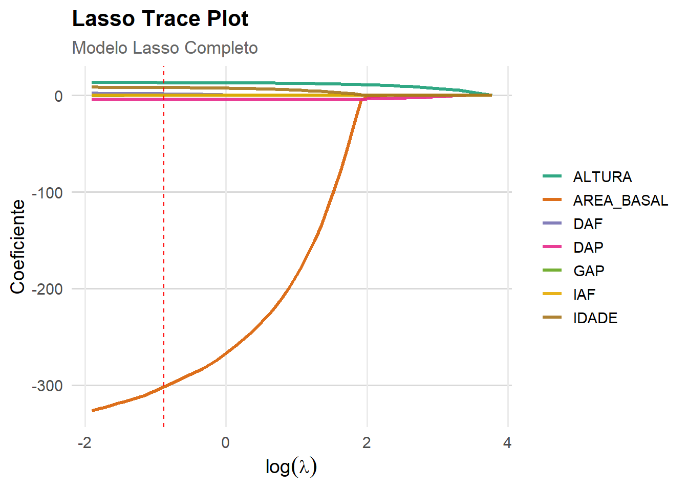

library(readxl)
dados <- read_excel("dados_pinus.xlsx")5 Modelo de Regressão LASSO
A regressçao ridge mantém todas as variáveis no modelo final, memso quando \(k\) é grande. Isso pode ser um problema na interpretação do modelo, por conta da quantidade de variáveis e pelos baixos coeficientes. O lasso pe uma alternativa à regressão ridge que permite obter um modelo final com um subconjunto de variáveis.
Para rodar a regressão Lasso na linguagem R, usaremos o pacote glmnet.
5.0.1 Variáveis
Para ilustrar a regressão ridge, vamos começar com um exemplo em que queremos estudar a relação entre DAP (variável preditora \(X_{1}\)) e Volume (variável dependente Y) com uma amostra de 250 arvores.
- Local: Empresa Duratex Florestal SP
- Amostra: 20 arvores
- IAF : Indice Aerea Foliar
- DAF : Distribuição Angular da Folha
- GAP :
- IDADE : Idade em Meses da arvore
- DAP : Diâmetro a Altura do Peito (1.30 metros do solo)
- ALTURA : Altura da arvore
- ÁEREA BASAL : Area Basal da arvore
5.1 Modelo Regressão LASSO Geral
library(caret)
library(glmnet)
set.seed(123)
train_index_lasso <- createDataPartition(dados$VOLUME, p = 0.9, list = FALSE)
dados_treino_lasso <- dados[train_index_lasso, ]
dados_teste_lasso <- dados[-train_index_lasso, ]
x_train_lasso <- model.matrix(VOLUME ~ ., dados_treino_lasso)[, -1]
y_train_lasso <- dados_treino_lasso$VOLUME
x_test_lasso <- model.matrix(VOLUME ~ ., dados_teste_lasso)[, -1]
y_test_lasso <- dados_teste_lasso$VOLUME
# Validação cruzada para Lasso (alpha = 1)
cv_lasso <- cv.glmnet(x_train_lasso, y_train_lasso, alpha = 1, standardize = TRUE)
best_lambda_lasso <- cv_lasso$lambda.min
modelo_lasso <- glmnet(x_train_lasso, y_train_lasso, alpha = 1, lambda = best_lambda_lasso, standardize = TRUE)
# Predição no teste
y_pred_lasso <- predict(modelo_lasso, s = best_lambda_lasso, newx = x_test_lasso)
R2_lasso <- cor(y_test_lasso, y_pred_lasso)^2
rmse_lasso <- sqrt(mean((y_test_lasso - y_pred_lasso)^2))
mae_lasso <- mean(abs(y_test_lasso - y_pred_lasso))
mape_lasso <- mean(abs((y_test_lasso - y_pred_lasso) / y_test_lasso)) * 100
# Variáveis selecionadas (diferentes de zero)
coef_lasso <- coef(modelo_lasso)
variaveis_lasso <- rownames(coef_lasso)[coef_lasso[, 1] != 0 & rownames(coef_lasso) != "(Intercept)"]
# ----- AIC e BIC -----
n <- length(y_train_lasso)
y_fitted_lasso <- predict(modelo_lasso, s = best_lambda_lasso, newx = x_train_lasso)
rss_lasso <- sum((y_train_lasso - y_fitted_lasso)^2)
sigma2_lasso <- rss_lasso / n
logLik_lasso <- -n / 2 * (log(2 * pi) + log(sigma2_lasso) + 1)
df_lasso <- modelo_lasso$df # graus de liberdade = número de coeficientes ≠ 0
aic_lasso <- -2 * logLik_lasso + 2 * df_lasso
bic_lasso <- -2 * logLik_lasso + log(n) * df_lasso
# Resultados
cat("Lasso COM todas as variáveis:\n")Lasso COM todas as variáveis:cat("R²:", R2_lasso,
"\nRMSE:", rmse_lasso,
"\nMAE:", mae_lasso,
"\nMAPE =", mape_lasso,
"\nAIC =", aic_lasso,
"\nBIC =", bic_lasso
)R²: 0.9199676
RMSE: 12.2659
MAE: 10.5483
MAPE = 23.57098
AIC = 1694.74
BIC = 1711.843cat("\nVariáveis selecionadas:", paste(variaveis_lasso, collapse = ", "), "\n")
Variáveis selecionadas: IDADE, DAP, ALTURA, DAF, AREA_BASAL #------------------------------------------------------------------------------#5.2 Lasso Trace Plot
library(tidyr)
library(caret)
library(glmnet)
# Ajustar Lasso com sequência de lambdas
lasso_seq <- glmnet(x_train_lasso, y_train_lasso, alpha = 1, standardize = TRUE)
# Obter coeficientes e log(lambda)
coefs_lasso_matrix <- as.matrix(lasso_seq$beta)
lambdas_lasso <- lasso_seq$lambda
log_lambda_lasso <- log(lambdas_lasso)
# Transpor e criar data frame com log(lambda)
df_coefs_lasso <- as.data.frame(t(coefs_lasso_matrix))
df_coefs_lasso$log_lambda <- log_lambda_lasso
# Transformar para formato longo (tidy)
df_long_lasso <- df_coefs_lasso %>%
pivot_longer(cols = -log_lambda, names_to = "Variavel", values_to = "Coeficiente")
# Lasso Plot com ggplot2
ggplot(df_long_lasso, aes(x = log_lambda,
y = Coeficiente,
color = Variavel)) +
geom_line(size = 1.2, alpha = 0.9) + # Linhas suaves e grossas
geom_vline(xintercept = log(best_lambda_lasso),
linetype = "dashed", color = "red") +
labs(
title = "Lasso Trace Plot",
subtitle = "Modelo Lasso Completo",
x = expression(log(lambda)),
y = "Coeficiente"
) +
scale_color_brewer(palette = "Dark2") + # Paleta de cores suave
theme_minimal(base_size = 14) +
theme(
plot.title = element_text(face = "bold", size = 16),
plot.subtitle = element_text(size = 13, color = "gray40"),
legend.title = element_blank(),
legend.text = element_text(size = 11),
legend.position = "right",
panel.grid.minor = element_blank(),
panel.grid.major.y = element_line(color = "gray85")
)